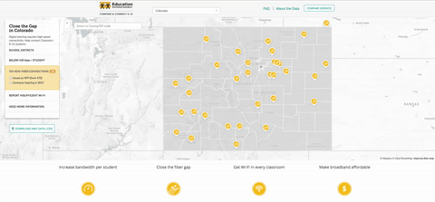

H. Jess Seok
education advocate
data visualist
outdoor enthusiast
Passions

Educational Equity
I was raised by a mother who devoted her life to helping women excel in STEM fields. Inspired by her advocacy, I have sought to build a life that empowers others to achieve their potential through education.
During my time in San Francisco, I mentored a low-income high school student through Minds Matter. Most importantly, I helped her discover and develop her passion for computer science, which led her to enroll in an engineering program for college. Since her graduation, I have led the summer program operations at Minds Matter to help our mentees tap into their passions and talents through college-level academic programs.

Analytics for Good
At EducationSuperHighway, I developed data dashboards that empowered every colleague to conduct targeted outreach to schools that need better Internet access. While consulting for nonprofits such as First Graduate and MindRight, I built tools that enabled them to measure their impact and scale their most effective programs.
These experiences affirmed that data translated into actionable insights expands organizational capacities to reach students in need. In the future, I aspire to build a social venture that breaks down barriers to education through democratization of data.

Health and Wellness
I deeply value my physical and mental health. During my first year at Deerfield Academy, I joined the cross country team on a whim and have never stopped running. These days, I love to explore the trails in Golden Gate Park and Presidio, two of the best urban parks in the world that are both steps away from my home.
In addition, I developed the practice of yoga and meditation, which have grounded me in times of both happiness and challenges. I am a RYT-200 certified yoga teacher. I also maintain a strict vegetarian diet out of health and environmental concerns.
Projects
Connectivity Dashboard
 Goal: Automate standard reporting and make data insights accessible to all teams.
Goal: Automate standard reporting and make data insights accessible to all teams.
 Context: During my first months at EducationSuperHighway, I spent many hours creating standard reports which involved redundant analyses on connectivity gaps in public schools. Each connectivity report took weeks to complete due to shifting methods and design tweaks. I teamed up with my colleague Sujin to build an alternative solution.
Context: During my first months at EducationSuperHighway, I spent many hours creating standard reports which involved redundant analyses on connectivity gaps in public schools. Each connectivity report took weeks to complete due to shifting methods and design tweaks. I teamed up with my colleague Sujin to build an alternative solution.
 Tools: SQL, R(Shiny, ggplot2, Leaflet)
Tools: SQL, R(Shiny, ggplot2, Leaflet)
 Impact: The Connectivity Dashboard was adopted by internal teams across the company. It now takes less than a week to create standard reports on connectivity. Perhaps more importantly, it enabled teams across the organization to gather and share data insights, helping us work more collaboratively. This tool was also recently featured in the RStudio blog.
Impact: The Connectivity Dashboard was adopted by internal teams across the company. It now takes less than a week to create standard reports on connectivity. Perhaps more importantly, it enabled teams across the organization to gather and share data insights, helping us work more collaboratively. This tool was also recently featured in the RStudio blog.
 My Contribution:
My Contribution:
- Pitched the initiative to leadership.
- Wrote R scripts that feed into the dashboard UI.
- Gathered early user feedback to make the dashboard as user-friendly as possible.
- Executed the project from start to finish (v1.0).
 Using the Connectivity Dashboard 1.0
Using the Connectivity Dashboard 1.0
Compare and Connect K-12
Goal: Inform state leaders on districts that need support on bridging connectivity gap. Engage with service providers to help them provide more bandwidth to schools.
Context: We are launching Compare and Connect K-12 2.0 with re-designed state landing pages. Each state landing page has a map of districts with bandwidth and fiber needs and a view of service providers ranked by connectivity-related performance (among a slew of incredible features!).
Tools: SQL, R
Impact: Ongoing. We officially launched Compare & Connect K-12 in November 2016. Here is a write-up from EdSurge!
My Contribution:
- QA'ed SQL scripts that identify services that districts receive and classify them into targets or non-targets based on their needs.
- Created flow charts of the algorithm that were critical in aligning various teams on definition of target districts.
- Analyzed service provider landscape and led organization to consensus on key metrics to measure service provider performance.

Using the Compare & Connect K-12 1.0
Minds Matter of San Francisco
Goal: Help Minds Matter students own their summer program experience.
Context: Minds Matter is a national organization helping high-achieving, low-income students succeed in college and beyond. I currently serve as the Head of Summer Programs for the San Francisco chapter. My team and I are creating various workshops and tools to guide students' research and application process.
Tools: n.a.
Impact: Ongoing. Sophomore and junior students are just beginning their summer program research process (as of September '16). We will gather feedback from mentors and mentees in June '17.
My Contribution:
- Document previous summer program application process and create roadmap for reforming the current process.
- Persuade Chief Programming Officer and wider Minds Matter Leadership team on the need to implement reform
- Support Summer Programs team in creating workshops and tools, re-designing summer program website, and communicating with the National office and summer program partners.
First Graduate
Goal: Enable First Graduate staff to track student progress through a cloud database.
Context: First Graduate was preparing to scale its mentoring program for (to-be) first-generation college students. It also had an opportunity to track student progress through Beyond12 Alumni Tracker Database at an affordable cost. I teamed up with my colleagues Reena and Adam to set up the database and improve data management practices at First Graduate.
Tools: Secondary Research, R
Impact: 10+ years of student data became available to every First Graduate staff.
My Contribution:
- Delivered research memo on predictors of student performance.
- Aggregated and cleaned student data that had been dispersed among various spreadsheets and documents.
- Interviewed First Graduate staff to understand their needs and communicated them to Beyond12 liaison to reflect them in the database template.
- Onboarded a graduate Data Analysis & Evaluation intern.
About
Anyone who stops learning is old, whether at twenty or eighty. - Henry Ford
I am an education + data enthusiast who is always learning and occasionally traveling. Originally from South Korea I now call various places my home. I studied International Relations at Georgetown University. After a stint at academic research with a brilliant professor at Stanford, I worked at Cornerstone Research where I developed a complicated relationship with sas.
I am currently at EducationSuperHighway where I analyze and visualize Internet connectivity gaps in public schools to enable digital learning for students without sufficient broadband access. I live steps away from Golden Gate Park in San Francisco.
p.s.This website is the first thing I ever built on HTML + CSS. It borrows heavily from my amazing friend Liz's website. Check it out for your own inspiration! Also, icon8 is awesome as are free resources on the Internet.